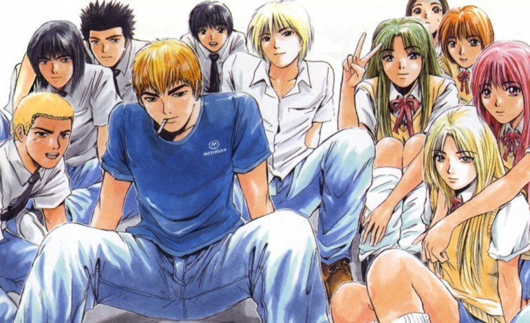
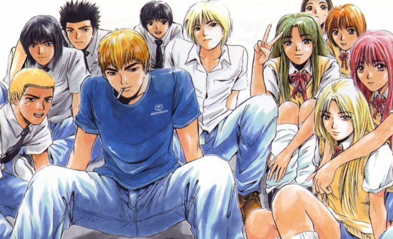
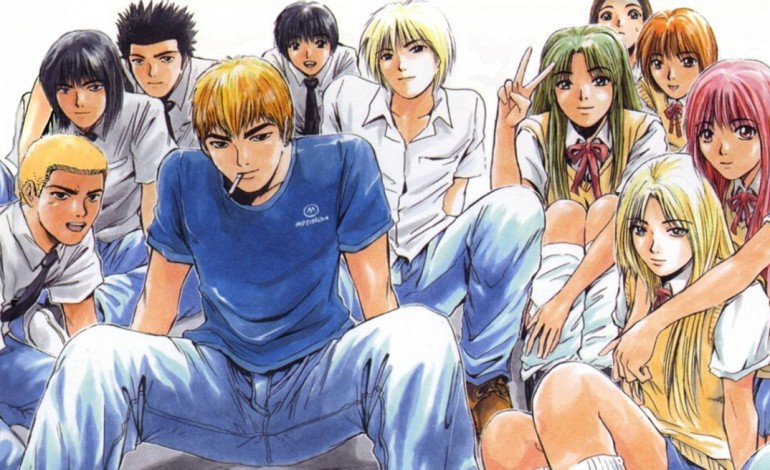

Gto est un des meilleurs mangas que je n'ai jamais lu.
Les personnages sont tout simplement géniaux et l'humour est excellent (de mon point de vue).
La série fait 25 tomes donc y'a de quoi faire.
Et pour couronner le tout, il y'a différents hors séries comme Young Gto ,
Gto shonan 14 days,
Bad Compagny, qui raconte comment Ryuji, rencontre Onizuka, son meilleur ami et le personnage principal des Gto.
Il reste plus que Gtr (Great transporter Ryuji),
manga cette fois ci plus axé sur Ryuji; et bien sur GTO Paradise Lost
Si vous souhaitez lire le résumé je vous le met ici
